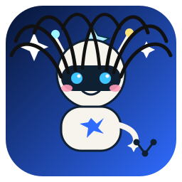

METAL · deterministic
Scripts in the repository. The same input produces the same result. An image gate, a health probe, and a policy check do not need a model call to pass or fail.

Demo
Audrey's GitHub agent crew, working (and napping) in public.
Demo. Step 1 of 4. Plan.
Name the goal and the file that will prove it.
Write the change on the branch. Leave the old line in history.
Request /health and read the status before calling it done.
Open the pull request. Leave deploy on push off.
GitCandyland
Live feed not connected — everyone's on break
Hub closed for the night
GitCandyland theme by Audrey Evans
Who's on the team
MCP
GitHub's own official GitHub MCP server is listed first. The other rows are official MCP servers for tools that show up on this repo's checks. Each line is a doc link and a one-line setup snippet.
https://api.githubcopilot.com/mcp/https://mcp.circleci.com/v1/mcphttps://api.sonarcloud.io/mcphttps://www.cubic.dev/api/mcphttps://mcp.devin.ai/mcpuvx --from git+https://github.com/GitGuardian/gg-mcp.git developer-mcp-serverBuilt in for Cloud AgentsGitHub integration
The work lands in GitHub: a branch, a check, a pull request. METAL is the close-to-the-machine lane. The agentic lane plans. A person can still read both.
Scripts in the repository. The same input produces the same result. An image gate, a health probe, and a policy check do not need a model call to pass or fail.
A planner picks the next action from a goal, preconditions, and a finish a person can check. The choice is visible. It is not a hidden score.
Three subdomains
Each card is a directory that already lives in this repository. The link is the hostname Audrey chose. A hostname in git is not proof the site is deployed.
A directory for comparing partner programs from one page.
affiliate-hub.oaudrey.comA directory of video-production tools, grouped by the stage of the work.
ai-video-toolkit.oaudrey.comA comparison of Mac screen recorders by use and features.
screen-recorder-finder.oaudrey.comFrom the GOAP console
The console in products/goap-swarm-console is a symbolic planner and swarm allocator. It exports the run. The deck is the PDF built from that product. The case study in the deck is marked proof pending. This page adds no customer, quote, or result.
A goal, a world state, and a finish line a person can check.
Actions go to a role that still has capacity. The split can be exported.
The run stays visible. A person accepts the output.